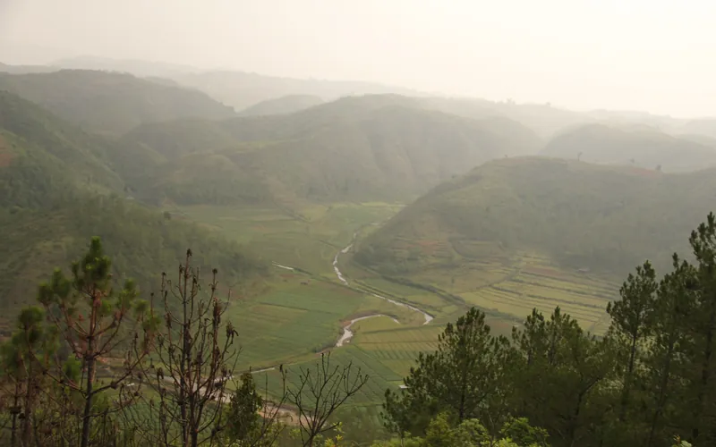
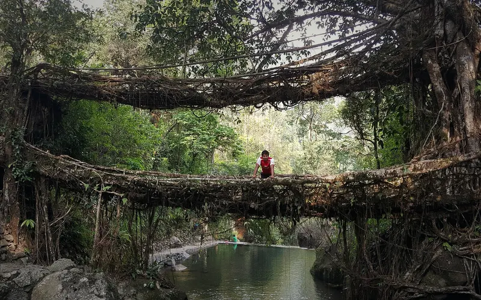
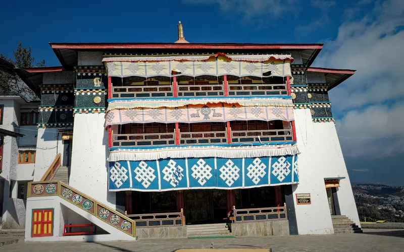

3 treks
Treks within 200 km of Guwahati in a straight line, nearest first. Road distance is longer.
David Scott Trail 80 km · Nongriat root bridges 99 km · Bailey Trail (Tawang) 165 km
| Trek | Highest point | Days on trail | Difficulty | Best months |
|---|---|---|---|---|
| David Scott Trail | 1,829 m | 2 | Easy | Oct–Apr |
| Nongriat root bridges | – | 1 | Moderate–hard | Oct–Mar |
| Bailey Trail (Tawang) | 4,980 m | 10 | Hard | Apr–Jun, Sep–Oct |

Easy · 2 daysPhoto: Arshiya Urveeja Bose, CC BY 2.0
David Scott Trail
▲ 1,829 m · Best Oct–Apr
Moderate–hard · 1 dayPhoto: Arijit Sahu, CC BY-SA 4.0
Nongriat root bridges
Best Oct–Mar
Hard · 10 daysPhoto: Kingshuk Mondal, CC BY-SA 4.0
Bailey Trail (Tawang)
▲ 4,980 m · Best Apr–Jun, Sep–OctQuestions
Which are the treks near guwahati?
The Treqz atlas lists David Scott Trail, Nongriat root bridges, Bailey Trail (Tawang).
Which is the easiest of the treks near guwahati?
David Scott Trail: graded Easy, 2 days on the trail.
Which is the highest of the treks near guwahati?
Bailey Trail (Tawang), with a highest point of 4,980 m.
Which is the shortest of the treks near guwahati?
Nongriat root bridges: 1 day on the trail.